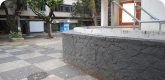
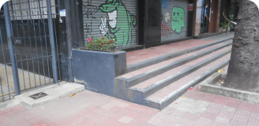
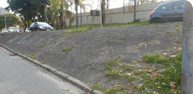
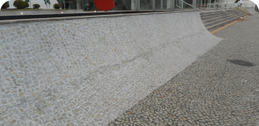

Picos
Favoritos
Ver todos-

Wallride da FGP
Júlia Fonseca
-

Borda de valores
Júlia Fonseca
-

Wallride do Rebouças
Júlia Fonseca
-

Segundo setor da Praça Mauá
Júlia Fonseca
-
Wallride do Rebouças
Júlia Fonseca
-

HZC - Vidalocagi - Não importa o nivel
Júlia Fonseca
Mais visitados
Andre Soares
Gap do Itaú da Voluntários da Pátria
53 visualizações
Bruno Lopez
Gap com mureta da Voluntários
53 visualizações
Luiza Sampaio
Rampa da entrada do túnel Rebouças
53 visualizações
Bruno Lopez
Wallride de pedra portuguesa da FGP
53 visualizações